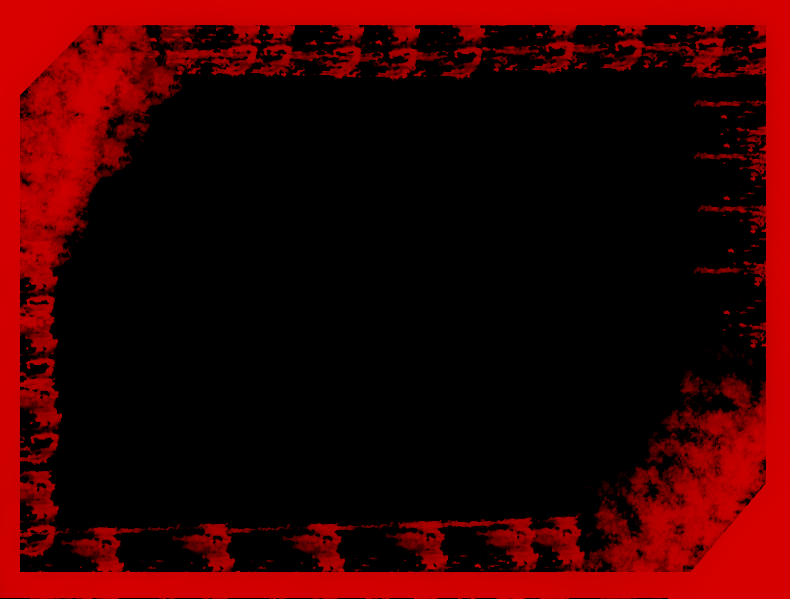

معرض الشركة

Al-Nsour Company welcomes you
سيارةٌ كالجوادِ تُسْرِعُ في الطُّرقِ
كأنَّهَا برقٌ يَمْضِي في السَّحَابِ
تَحْمِلُنا إلى حيثُ نُرِيدُ في دقائقَ
وَتَقْطَعُ المسافاتِ دونَ عناءٍ
ماركاتنا
سر قوتنا
مميزات المرسيدس
وفر شركة مرسيدس في مختلف فئاتها معظم إضافات الأمان والرفاهية الراحة المتوفرة ببقية أنواع السيارات، ولكنها تتميز عن غيرها من الشركات ببعض الإضافات الخاصة، وفي ما يلي أبرزها:
نظام تعليق هوائي يحافظ على توازن المقصورة الداخلية والمركبة بالكامل على مختلف ظروف الطرق المعبدة.
ضاءة داخلية مع خيارات متنوعة من الألوان تصل حتى 64 لوناً.
حزمة الراحة الصوتية، والتي تشتمل على استخدام أنواع خاصة من الزجاج، وعزل أكثر سماكة لجسم المركبة، وسجاد لأرضية المركبة أكثر سماكة، وفي السيارات الفارهة مثل فئة المايباخ يستخدم نظام صوتي لتعزيز عزل المركبة عن المحيط الخارجي.
زجاج مع طبقات حماية من الأشعة فوق البنفسجية.
مقاعد خلفية منفصلة مع كونسول وسطي ممتد من على طول السيارات للإصدارات الخاصة.
نظام ترفيه وتحكم بإضافات السيارة مع تحكم مركزي من خلال تطبيقات الهواتف الذكية
عيوب المرسيدس
سيارات مرسيدس باهظة الثمن، سواء من حيث شرائها أو صيانتها.تتميز سيارات مرسيدس بتقنياتها المتقدمة، مما قد يجعلها معقدة في الاستخدام والصيانة.
قطع غيار سيارات مرسيدس غالية الثمن، وقد يصعب العثور عليها أحيانًا.بعض موديلات مرسيدس تستهلك وقودًا أكثر من غيرها من السيارات.
بعض موديلات مرسيدس تعاني من مشاكل إلكترونية، مثل مشاكل في نظام المعلومات والترفيه أو أنظمة المساعدة للسائق.واجهت بعض موديلات مرسيدس مشاكل في المحرك، مثل تسريبات الزيت أو مشاكل في نظام التوقيت.
اسعار المرسيدس
1,275,000 جنيه مصري
1,675,000 جنيه مصري
1,875,000 جنيه مصري
2,675,000 جنيه مصري
5,475,000 جنيه مصري
مميزات BMW
تشتهر سيارات بي إم دبليو بأدائها القوي وتحكمها الممتاز.تتميز سيارات بي إم دبليو بتصميمها الأنيق والعصري.تُصنع سيارات بي إم دبليو من مواد عالية الجودة وتخضع لمعايير صارمة لمراقبة الجودة.
تتميز سيارات بي إم دبليو بأحدث التقنيات، مثل أنظمة المعلومات والترفيه المتقدمة وأنظمة مساعدة السائق.تُصنف سيارات بي إم دبليو من بين أكثر السيارات أمانًا في العالم.
توفر سيارات بي إم دبليو تجربة قيادة فاخرة ومريحة. تمتلك بي إم دبليو ثقافة غنية وتاريخ عريق في صناعة السيارات.
عيوب BMW
سيارات بي إم دبليو باهظة الثمن، سواء من حيث شرائها أو صيانتها.تتميز سيارات بي إم دبليو بتقنياتها المتقدمة، مما قد يجعلها معقدة في الاستخدام والصيانة.
قطع غيار سيارات بي إم دبليو غالية الثمن، وقد يصعب العثور عليها أحيانًا.بعض موديلات بي إم دبليو تستهلك وقودًا أكثر من غيرها من السيارات.
واجهت بعض موديلات بي إم دبليو مشاكل إلكترونية، مثل مشاكل في نظام المعلومات والترفيه أو أنظمة المساعدة للسائق.واجهت بعض موديلات بي إم دبليو مشاكل في المحرك، مثل تسريبات الزيت أو مشاكل في نظام التوقيت.
بعض موديلات بي إم دبليو، خاصةً الموديلات الرياضية، توفر مساحة محدودة للركاب والبضائع.تتميز سيارات بي إم دبليو بقيادتها الرياضية، مما قد يجعلها قاسية على بعض الركاب.
اسعار BMW
2,200,000 جنيه مصري
2,900,000 جنيه مصري
3,500,000 جنيه مصري
5,000,000 جنيه مصري
6,500,000 جنيه مصري
مميزات Ferrari
تتميز سيارات فيراري بأدائها القوي وتحكمها الممتاز.تتمتع سيارات فيراري بتصميمها الأنيق والعصري.تُصنع سيارات فيراري من مواد عالية الجودة وتخضع لمعايير صارمة لمراقبة الجودة.
تتميز سيارات فيراري بأحدث التقنيات، مثل أنظمة المعلومات والترفيه المتقدمة وأنظمة مساعدة السائق.تُصنف سيارات فيراري من بين أكثر السيارات أمانًا في العالم.وفر سيارات فيراري تجربة قيادة فاخرة ومريحة.
تمتلك فيراري تاريخًا عريقًا وسمعة طيبة في صناعة السيارات الفارهة.
عيوب Ferrari
سيارات فيراري باهظة الثمن للغاية، سواء من حيث شرائها أو صيانتها.تتميز سيارات فيراري بتقنياتها المتقدمة، مما قد يجعلها معقدة في الاستخدام والصيانة.
قطع غيار سيارات فيراري غالية الثمن، وقد يصعب العثور عليها أحيانًا.بعض موديلات فيراري تستهلك وقودًا أكثر من غيرها من السيارات.تتميز سيارات فيراري بتصميمها الرياضي، مما قد يجعلها ذات مساحة محدودة للركاب والبضائع.
تتميز سيارات فيراري بقيادتها الرياضية، مما قد يجعلها قاسية على بعض الركاب.واجهت بعض موديلات فيراري مشاكل إلكترونية، مثل مشاكل في نظام المعلومات والترفيه أو أنظمة المساعدة للسائق.
واجهت بعض موديلات فيراري مشاكل في المحرك، مثل تسريبات الزيت أو مشاكل في نظام التوقيت.عدد وكلاء فيراري في العالم محدود، مما قد يجعل من الصعب الحصول على الخدمة والصيانة.
قد يكون هناك قائمة انتظار طويلة لشراء بعض موديلات فيراري.
اسعار Ferrari
20,160,000 جنيه مصري
12,945,000 جنيه مصري
12,000,000 جنيه مصري
9,675,000 جنيه مصري
9,400,000 جنيه مصري
مميزات Lamborghini
تتميز سيارات لامبورجيني بمحركاتها القوية ذات السعة الكبيرة، والتي تنتج عزمًا هائلاً وقوة حصانية هائلة.بفضل محركاتها القوية، تتمتع سيارات لامبورجيني بتسارع هائل.
يمكن لسيارات لامبورجيني الوصول إلى سرعات قصوى مذهلة.
تمتع سيارات لامبورجيني بتحكم ديناميكي ممتاز، مما يجعلها ممتعة للغاية للقيادة على الطرق المتعرجة أو حلبات السباق.تتميز سيارات لامبورجيني بتصميمها الفريد والعدواني، والذي يجعلها مميزة عن أي سيارة أخرى على الطريق.
تتمتع سيارات لامبورجيني بمقصورة داخلية فاخرة ومريحة، مع مقاعد جلدية مريحة ونظام صوتي ممتاز.
عيوب Lamborghini
تُعد سيارات لامبورجيني من أغلى السيارات في العالم.ويمكن أن تصل إلى أكثر من مليون دولار أمريكي للطرازات المحدودة الإصدار.تميز سيارات لامبورجيني بتصميمها المعقد وتقنياتها المتقدمة، مما يعني أن تكلفة صيانتها مرتفعة. بالإضافة إلى ذلك، فإن قطع غيار سيارات لامبورجيني باهظة الثمن، وعادة ما يجب استيرادها من إيطاليا.
تتمتع سيارات لامبورجيني بمحركات قوية ذات سعة كبيرة، مما يعني أنها تستهلك الكثير من الوقود.تمتع سيارات لامبورجيني بمساحة داخلية محدودة، خاصة في المقاعد الخلفية. قد يجعل ذلك من الصعب على العائلات أو مجموعات الأشخاص السفر بشكل مريح في سيارة لامبورجيني.
تمتع سيارات لامبورجيني بتصميم رياضي مع خفض للمقدمة ورفع للخلفية، مما قد يجعل من الصعب قيادتها في بعض المواقف،قد تكون الرؤية من داخل سيارات لامبورجيني محدودة، خاصة من الخلف بسبب التصميم المنحني للنافذة الخلفية.
اسعار Lamborghini
200,000 دولار أمريكي
8,500,000 جنيه مصري
9,500,000 جنيه مصري
13,250,000 جنيه مصري
20,000,000 جنيه مصري
مميزات Jeep
تتميز سيارات الجيب بقدراتها الرائعة على الطرق الوعرة، وذلك بفضل ارتفاعها العالي ونظام الدفع الرباعي القوي وإطاراتها المتينة.توفر سيارات الجيب مساحة داخلية واسعة، مما يجعلها مناسبة للعائلات أو مجموعات الأشخاص.
تتمتع سيارات الجيب بقوة سحب كبيرة، مما يجعلها مثالية لسحب المقطورات أو القوارب.توفر سيارات الجيب رحلة مريحة على جميع أنواع الطرق، وذلك بفضل أنظمة التعليق الناعمة ومقاعدها المريحة.
توفر العديد من سيارات الجيب نظام الدفع الرباعي، مما يمنحها أداءً أفضل على الطرق الوعرة والظروف الجوية السيئة.تأتي العديد من سيارات الجيب مزودة بميزات السلامة المتقدمة، مثل الكبح التلقائي والتحذير من مغادرة المسار والتحكم التكيفي في السرعة.
عيوب Jeep
تميل سيارات الجيب إلى استهلاك المزيد من الوقود من السيارات الأخرى بسبب حجمها ووزنها.قد تكون سيارات الجيب باهظة الثمن، خاصةً الطرازات ذات الميزات المتقدمة.
قد يكون حجم سيارات الجيب كبيرًا وصعبًا على المناورة في بعض المواقف، مثل مواقف السيارات في المدن.قد يكون تأمين سيارات الجيب باهظ الثمن بسبب ارتفاع سعرها وأدائها العالي.
.سيارات الجيب هي مركبات رائعة للسائقين الذين يبحثون عن مركبة قوية ومتعددة الاستخدامات. ومع ذلك، فهي ليست مثالية للجميع، ويجب على المشترين المحتملين مراعاة العيوب المحتملة قبل اتخاذ قرار الشراء.
اسعار Jeep
100,000 دولار أمريكي
1,800,000 جنيه مصري
2,850,000 جنيه مصري
1,100,000 جنيه مصري
895,000 جنيه مصري